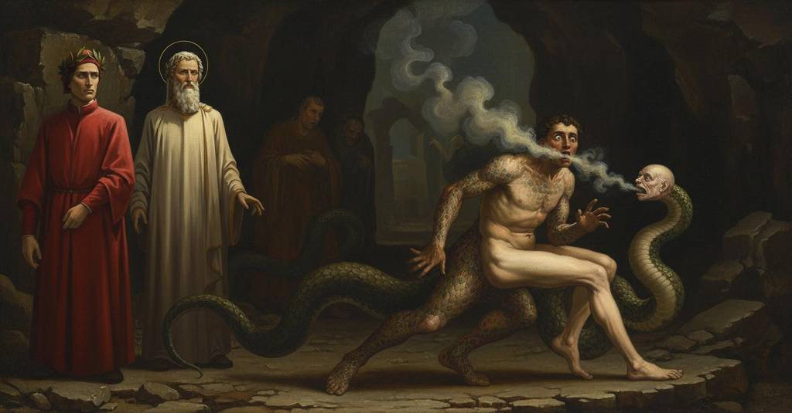

Inferno — Canto 25

1
Al fine de le sue parole il ladro
At the end of his words the thief
その言葉の終わりに、盗人は
2
le mani alzò con amendue le fiche,
raised his hands with both the figs,
両手で無花果の印をかかげ、
3
gridando: «Togli, Dio, ch’a te le squadro!».
shouting: “Take them, God, for at you I square them!”
叫んだ、「受けとれ、神よ、貴様に向けてやるぞ！」。
4
Da indi in qua mi fuor le serpi amiche,
From then on the snakes were my friends,
その時から蛇どもは私の友となった、
5
perch’ una li s’avvolse allora al collo,
because one then coiled around his neck,
というのも一匹が彼の首に巻きついたからだ、
6
come dicesse ‘Non vo’ che più diche’;
as if to say ‘I don’t want you to say more’;
まるで「これ以上喋るな」と言うかのように。
7
e un’altra a le braccia, e rilegollo,
and another on his arms, and bound him again,
そしてもう一匹が腕に、そして彼を再び縛った、
8
ribadendo sé stessa sì dinanzi,
riveting itself so in front of him,
体の前で固く自らを結びつけ、
9
che non potea con esse dare un crollo.
that he could not make a single twitch with them.
彼がそれで身じろぎ一つできないほどに。
10
Ahi Pistoia, Pistoia, ché non stanzi
Ah Pistoia, Pistoia, why do you not resolve
ああピストイアよ、ピストイア、なぜお前は決意せぬのか
11
d’incenerarti sì che più non duri,
to turn yourself to ash so you endure no more,
自らを灰となし、もはや長らえぬことを、
12
poi che ’n mal fare il seme tuo avanzi?
since in doing evil you surpass your seed?
悪事をなすにおいて、その種を凌ぐからには？
13
Per tutt’ i cerchi de lo ’nferno scuri
Through all the dark circles of Hell
暗き地獄のすべての圏を通じても
14
non vidi spirto in Dio tanto superbo,
I saw no spirit so proud against God,
私は神に対しこれほど傲慢な魂を見なかった、
15
non quel che cadde a Tebe giù da’ muri.
not he who fell at Thebes down from the walls.
テーバイの城壁から落ちた者さえ、これほどではなかった。
16
El si fuggì che non parlò più verbo;
He fled so that he spoke no more a word;
彼は一言も発さずに逃げ去った。
17
e io vidi un centauro pien di rabbia
and I saw a centaur full of rage
そして私は、怒りに満ちた一人のケンタウロスが
18
venir chiamando: «Ov’ è, ov’ è l’acerbo?».
come shouting: “Where is he, where is the bitter one?”
「どこだ、あの苦々しい奴はどこだ？」と叫びながら来るのを見た。
19
Maremma non cred’ io che tante n’abbia,
Maremma, I do not believe, has so many
マレンマでさえ、それほど多くは持たぬだろう、
20
quante bisce elli avea su per la groppa
as the snakes he had upon his croup
彼がその背中に負っていたほどの蛇を、
21
infin ove comincia nostra labbia.
up to where our human features begin.
我々の人たる姿が始まるところまで。
22
Sovra le spalle, dietro da la coppa,
Upon his shoulders, behind the nape,
肩の上、うなじの後ろには、
23
con l’ali aperte li giacea un draco;
with open wings there lay a dragon;
翼を広げた一匹の竜が横たわっていた。
24
e quello affuoca qualunque s’intoppa.
and it sets on fire whoever it runs up against.
そしてそいつは、出くわす者すべてを焼き尽くす。
25
Lo mio maestro disse: «Questi è Caco,
My master said: “This is Cacus,
我が師は言った、「これはカクスだ、
26
che, sotto ’l sasso di monte Aventino,
who, beneath the rock of Mount Aventine,
アヴェンティーノの丘の岩の下で、
27
di sangue fece spesse volte laco.
often made a lake of blood.
幾度となく血の湖を作った者だ。
28
Non va co’ suoi fratei per un cammino,
He does not go with his brothers on one path,
彼は兄弟たちと同じ道を行かぬ、
29
per lo furto che frodolente fece
for the fraudulent theft he committed
彼が詐欺を働いて盗んだためだ、
30
del grande armento ch’elli ebbe a vicino;
of the great herd that he had nearby;
近くにいた大いなる家畜の群れを。
31
onde cessar le sue opere biece
for which his crooked deeds ceased
そのために彼の邪悪な行いは終わりを告げた
32
sotto la mazza d’Ercule, che forse
under the club of Hercules, who perhaps
ヘラクレスの棍棒のもとで、彼は恐らく
33
gliene diè cento, e non sentì le diece».
gave him a hundred blows, and he did not feel ten.”
百発を与えられ、十発も感じなかっただろう」。
34
Mentre che sì parlava, ed el trascorse,
While he was thus speaking, and he ran on,
彼がそう語り、そして走り去る間に、
35
e tre spiriti venner sotto noi,
and three spirits came up underneath us,
三人の霊が我々の下にやって来て、
36
de’ quai né io né ’l duca mio s’accorse,
of whom neither I nor my duke was aware,
私にも我が導き手にも気づかれなかったが、
37
se non quando gridar: «Chi siete voi?»;
except when they cried out: “Who are you?”;
彼らが「お前たちは誰だ？」と叫んだ時までは。
38
per che nostra novella si ristette,
for which our new tale was stayed,
そのために我々の話は止まり、
39
e intendemmo pur ad essi poi.
and we then turned our attention only to them.
そして我々はただ彼らに注意を向けた。
40
Io non li conoscea; ma ei seguette,
I did not know them; but it came to pass,
私は彼らを知らなかった。しかしこうなった、
41
come suol seguitar per alcun caso,
as it is wont to come to pass by some chance,
何かの偶然でよく起こるように、
42
che l’un nomar un altro convenette,
that one had occasion to name another,
一人がもう一人を呼ばねばならなくなった、
43
dicendo: «Cianfa dove fia rimaso?»;
saying: “Cianfa, where has he been left?”;
言うには、「チャンファはどこに留まっているのか？」と。
44
per ch’io, acciò che ’l duca stesse attento,
wherefore I, so that the duke might be attentive,
そのため私は、導き手が注意を払うようにと、
45
mi puosi ’l dito su dal mento al naso.
placed my finger up from my chin to my nose.
顎から鼻にかけて指を置いた。
46
Se tu se’ or, lettore, a creder lento
If you are now, reader, slow to believe
もし今お前が、読者よ、信じがたいのなら
47
ciò ch’io dirò, non sarà maraviglia,
what I shall say, it will be no wonder,
私がこれから語ることを、それは不思議ではない、
48
ché io che ’l vidi, a pena il mi consento.
for I who saw it, can scarcely grant it to myself.
なぜならそれを見た私自身、ほとんどそれを信じられないのだから。
49
Com’ io tenea levate in lor le ciglia,
As I held my brows raised toward them,
私が彼らに眉を上げて見つめていると、
50
e un serpente con sei piè si lancia
a serpent with six feet throws itself
すると六本足の蛇が一匹、飛びかかり
51
dinanzi a l’uno, e tutto a lui s’appiglia.
in front of one, and clings all over him.
そのうちの一人の前に、そして彼に完全に絡みついた。
52
Co’ piè di mezzo li avvinse la pancia
With its middle feet it clasped his belly
真ん中の足で彼の腹を締めつけ、
53
e con li anterïor le braccia prese;
and with its forefeet it seized his arms;
そして前の足で両腕を掴んだ。
54
poi li addentò e l’una e l’altra guancia;
then it bit him on one cheek and the other;
それから彼の両方の頬に歯を立てた。
55
li diretani a le cosce distese,
its hind feet it stretched out along his thighs,
後ろの足は両腿へと伸ばし、
56
e miseli la coda tra ’mbedue
and put its tail between the two of them
そしてその間に尾を差し入れ、
57
e dietro per le ren sù la ritese.
and drew it up behind along his loins.
背後の腎のあたりまでそれを引き上げた。
58
Ellera abbarbicata mai non fue
Ivy was never so rooted
蔦がいまだかつてこれほどまでに
59
ad alber sì, come l’orribil fiera
to a tree, as the horrendous beast
木に根を張ったことはない、恐ろしい獣が
60
per l’altrui membra avviticchiò le sue.
entwined its own limbs through the other’s.
他者の四肢に自らのそれを巻きつけたように。
61
Poi s’appiccar, come di calda cera
Then they stuck together, as if they had been
それから彼らはくっついた、まるで熱い蝋で
62
fossero stati, e mischiar lor colore,
of hot wax, and mixed their color,
できているかのように、そしてその色を混ぜ合わせ、
63
né l’un né l’altro già parea quel ch’era:
neither the one nor the other now seemed what it was:
もはやどちらも元の姿には見えなかった。
64
come procede innanzi da l’ardore,
as, up a papyrus, a brown color
燃える炎の前を進むように、
65
per lo papiro suso, un color bruno
proceeds before the flame’s heat,
パピルス紙の上を、茶色い色が、
66
che non è nero ancora e ’l bianco more.
that is not yet black, and the white dies.
まだ黒くはなく、そして白が消えていくように。
67
Li altri due ’l riguardavano, e ciascuno
The other two were looking on, and each one
他の二人はそれを見つめ、そしてそれぞれが
68
gridava: «Omè, Agnel, come ti muti!
cried: “Oh me, Agnel, how you are changing!
叫んだ、「ああ、アニェッロよ、何とお前は変わるのだ！
69
Vedi che già non se’ né due né uno».
See, you are already neither two nor one.”
見よ、お前はもはや二つでも一つでもない」。
70
Già eran li due capi un divenuti,
Now the two heads had become one,
すでに二つの頭は一つになっていた、
71
quando n’apparver due figure miste
when there appeared to us two figures mixed
その時我々に二つの姿が混ざり合って現れた
72
in una faccia, ov’ eran due perduti.
in a single face, where two were lost.
一つの顔の中に、そこでは二つが失われていた。
73
Fersi le braccia due di quattro liste;
The arms became two from the four strips;
四本の筋からは二本の腕が作られ、
74
le cosce con le gambe e ’l ventre e ’l casso
the thighs with the legs, and the belly and the chest
腿と脚、腹と胸は
75
divenner membra che non fuor mai viste.
became limbs that had never been seen.
かつて見られなかった肢体となった。
76
Ogne primaio aspetto ivi era casso:
Every former aspect there was annulled:
あらゆる元の姿はそこで失われ、
77
due e nessun l’imagine perversa
two and none the perverse image
二つであり零であると、その奇怪な姿は
78
parea; e tal sen gio con lento passo.
seemed; and so, with a slow step, it went away.
見えた。そしてそのようにしてゆっくりとした足取りで去っていった。
79
Come ’l ramarro sotto la gran fersa
As the lizard under the great scourge
真夏の日の大いなる炎威のもとで
80
dei dì canicular, cangiando sepe,
of the dog days, changing from hedge to hedge,
蜥蜴が、垣根を変えつつ、
81
folgore par se la via attraversa,
seems a lightning flash if it crosses the path,
道を横切れば稲妻のように見えるが、
82
sì pareva, venendo verso l’epe
so there appeared, coming toward the bellies
そのように見えた、腹に向かって来るのが
83
de li altri due, un serpentello acceso,
of the other two, a little serpent inflamed,
残りの二人の、燃えるような小蛇が、
84
livido e nero come gran di pepe;
livid and black as a grain of pepper;
青黒く、胡椒の粒のように黒い。
85
e quella parte onde prima è preso
and that part whence our first nourishment
そして我らが最初に糧を得るその部分を、
86
nostro alimento, a l’un di lor trafisse;
is taken, it pierced in one of them;
彼らのうちの一人に刺し貫いた。
87
poi cadde giuso innanzi lui disteso.
then it fell down before him, stretched out.
それから彼の前に倒れ、身を伸ばした。
88
Lo trafitto ’l mirò, ma nulla disse;
The pierced one looked at it, but said nothing;
刺された者はそれを見つめたが、何も言わなかった。
89
anzi, co’ piè fermati, sbadigliava
rather, with his feet motionless, he yawned
それどころか、足を止めて、あくびをした、
90
pur come sonno o febbre l’assalisse.
just as if sleep or fever had assailed him.
まるで眠りか熱が彼を襲ったかのように。
91
Elli ’l serpente e quei lui riguardava;
It, the serpent, and he, the man, stared at each other;
彼は蛇を、そしてそいつは彼を見つめていた。
92
l’un per la piaga e l’altro per la bocca
the one through the wound and the other through the mouth
一方は傷口から、もう一方は口から
93
fummavan forte, e ’l fummo si scontrava.
smoked heavily, and the smoke collided.
盛んに煙を吐き、その煙はぶつかり合った。
94
Taccia Lucano ormai là dov’ e’ tocca
Let Lucan now be silent where he tells
ルカヌスはもはや黙るがよい、彼が触れるところで
95
del misero Sabello e di Nasidio,
of wretched Sabellus and of Nasidius,
哀れなサベッルスとナシディウスについて、
96
e attenda a udir quel ch’or si scocca.
and wait to hear what is now shot forth.
そして今や放たれるものを聞くがよい。
97
Taccia di Cadmo e d’Aretusa Ovidio,
Let Ovid be silent of Cadmus and Arethusa,
カドモスとアレトゥーサについてオウィディウスは黙るがよい、
98
ché se quello in serpente e quella in fonte
for if, in his poetry, he turns him to a serpent and her to a fountain,
なぜなら、もし彼が前者を蛇に、後者を泉に
99
converte poetando, io non lo ’nvidio;
I do not envy him;
詩作で変えるとしても、私はそれを羨まない。
100
ché due nature mai a fronte a fronte
for two natures, face to face, he never
なぜなら二つの本性を面と向かって
101
non trasmutò sì ch’amendue le forme
so transmuted that both their forms
変えることはなかった、二つの姿が共に
102
a cambiar lor matera fosser pronte.
were ready to exchange their substance.
その物質を変える用意ができるほどには。
103
Insieme si rispuosero a tai norme,
Together they responded to such rules,
共にそれらの法則に応え合った、
104
che ’l serpente la coda in forca fesse,
that the serpent split its tail into a fork,
蛇は尾を二股に裂き、
105
e ’l feruto ristrinse insieme l’orme.
and the wounded one pressed his footprints together.
傷ついた者は両足を一つに合わせた。
106
Le gambe con le cosce seco stesse
The legs with the thighs themselves
両脚は腿と共にそれら自身で
107
s’appiccar sì, che ’n poco la giuntura
clung so together, that in a short time the joining
互いにくっつき、やがてその継ぎ目は
108
non facea segno alcun che si paresse.
showed no sign at all that was apparent.
見えるような印を少しも作らなかった。
109
Togliea la coda fessa la figura
The cloven tail was taking on the shape
裂けた尾は姿を奪い取っていた
110
che si perdeva là, e la sua pelle
that was being lost there, and its skin
向こうで失われていく（姿を）、そしてその（蛇の）皮は
111
si facea molle, e quella di là dura.
was becoming soft, and the other's hard.
柔らかくなり、向こうの（人の）皮は硬くなった。
112
Io vidi intrar le braccia per l’ascelle,
I saw the arms draw into the armpits,
私は腕が脇の下から入るのを見た、
113
e i due piè de la fiera, ch’eran corti,
and the two feet of the beast, which were short,
そして獣の二本の足は、短かったが、
114
tanto allungar quanto accorciavan quelle.
lengthen as much as those were shortening.
向こうの（腕が）短くなるのと同じだけ長くなった。
115
Poscia li piè di rietro, insieme attorti,
Then the hind feet, twisted together,
その後、後ろ足は、共にねじれ合い、
116
diventaron lo membro che l’uom cela,
became the member that man conceals,
人が隠すあの器官となった、
117
e ’l misero del suo n’avea due porti.
and the wretch from his own had brought forth two.
そして哀れな者は、己のそれから二つを生み出した。
118
Mentre che ’l fummo l’uno e l’altro vela
While the smoke veils the one and the other
煙が一方と他方を覆う間
119
di color novo, e genera ’l pel suso
with a new color, and generates hair
新たな色で、そして一方には毛を生じさせ
120
per l’una parte e da l’altra il dipela,
on the one part and from the other strips it,
一方の側から、そしてもう一方からはそれを剥ぎ取り、
121
l’un si levò e l’altro cadde giuso,
the one rose up and the other fell down,
一方は立ち上がり、もう一方は倒れ伏した、
122
non torcendo però le lucerne empie,
not turning, however, the wicked lamps,
だが邪悪な灯火を逸らすことなく、
123
sotto le quai ciascun cambiava muso.
under which each was changing his muzzle.
その下で、各々が顔つきを変えていた。
124
Quel ch’era dritto, il trasse ver’ le tempie,
The one that was upright drew it toward his temples,
立っていた者は、その顔をこめかみに向かって引き寄せ、
125
e di troppa matera ch’in là venne
and from the excess matter that came there,
そしてそこへ来た過剰な物質から
126
uscir li orecchi de le gote scempie;
ears emerged from the smooth cheeks;
なめらかな頬から両耳が出てきた。
127
ciò che non corse in dietro e si ritenne
that which did not run back and was retained
後ろへ行かずに留まったものは
128
di quel soverchio, fé naso a la faccia
of that surplus, made a nose for the face
その余りから、顔に鼻を作り
129
e le labbra ingrossò quanto convenne.
and thickened the lips as was fitting.
そして唇をしかるべく厚くした。
130
Quel che giacëa, il muso innanzi caccia,
The one that lay prone thrusts its muzzle forward,
横たわっていた者は、鼻面を前へ突き出し、
131
e li orecchi ritira per la testa
and draws its ears back into its head
そして両耳を頭の中へ引き込む、
132
come face le corna la lumaccia;
as a snail does its horns;
蝸牛がその角でするように。
133
e la lingua, ch’avëa unita e presta
and the tongue, which it had whole and ready
そして舌は、一つで素早くあったが
134
prima a parlar, si fende, e la forcuta
before to speak, splits, and the forked one
かつて話すために、裂け、そして二股の（舌は）
135
ne l’altro si richiude; e ’l fummo resta.
in the other closes up; and the smoke ceases.
もう一方の中で閉じ合わさる。そして煙は止んだ。
136
L’anima ch’era fiera divenuta,
The soul that had become a beast,
獣と成り果てた魂は、
137
suffolando si fugge per la valle,
hissing, flees through the valley,
シューと音を立てて谷を逃げていき、
138
e l’altro dietro a lui parlando sputa.
and the other, speaking, spits after him.
もう一人はその後ろで、話しながら唾を吐く。
139
Poscia li volse le novelle spalle,
Then he turned his new shoulders to it,
やがてその新しい肩を彼に向け、
140
e disse a l’altro: «I’ vo’ che Buoso corra,
and said to the other: «I want Buoso to run,
もう一人に言った。「私はブオーゾが走るのを望む、
141
com’ ho fatt’ io, carpon per questo calle».
as I have done, on all fours along this path».
私がそうしたように、この小道を四つん這いで」。
142
Così vid’ io la settima zavorra
Thus I saw the seventh ballast
このようにして私は第七の汚物が
143
mutare e trasmutare; e qui mi scusi
change and transmute; and here may the novelty excuse me
変わり、また変貌するのを見た。そしてここで私を許されたい、
144
la novità se fior la penna abborra.
if the pen somewhat falters.
その目新しさゆえに、もし筆が少し乱れたとしても。
145
E avvegna che li occhi miei confusi
And though my eyes were somewhat confused
そして、私の目は混乱し
146
fossero alquanto e l’animo smagato,
and my mind bewildered,
心もいくらか動転していたとはいえ、
147
non poter quei fuggirsi tanto chiusi,
they could not flee so secretly
彼らはそれほど隠れて逃げることはできず、
148
ch’i’ non scorgessi ben Puccio Sciancato;
that I did not well make out Puccio Sciancato;
私がプッチョ・シャンカートをよく見分けられないほどではなかった。
149
ed era quel che sol, di tre compagni
and it was he who alone, of the three companions
そして彼は、三人の仲間の中で
150
che venner prima, non era mutato;
who came first, was not changed;
最初に現れたうち、唯一変貌しなかった者であった。
151
l’altr’ era quel che tu, Gaville, piagni.
the other was he for whom you, Gaville, weep.
もう一人は、ガヴィッレよ、お前が嘆き悲しむ者であった。